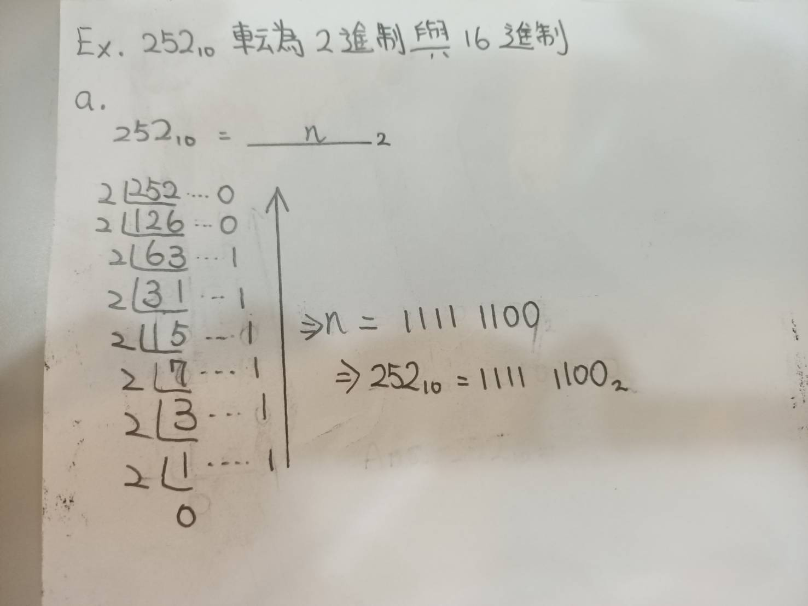
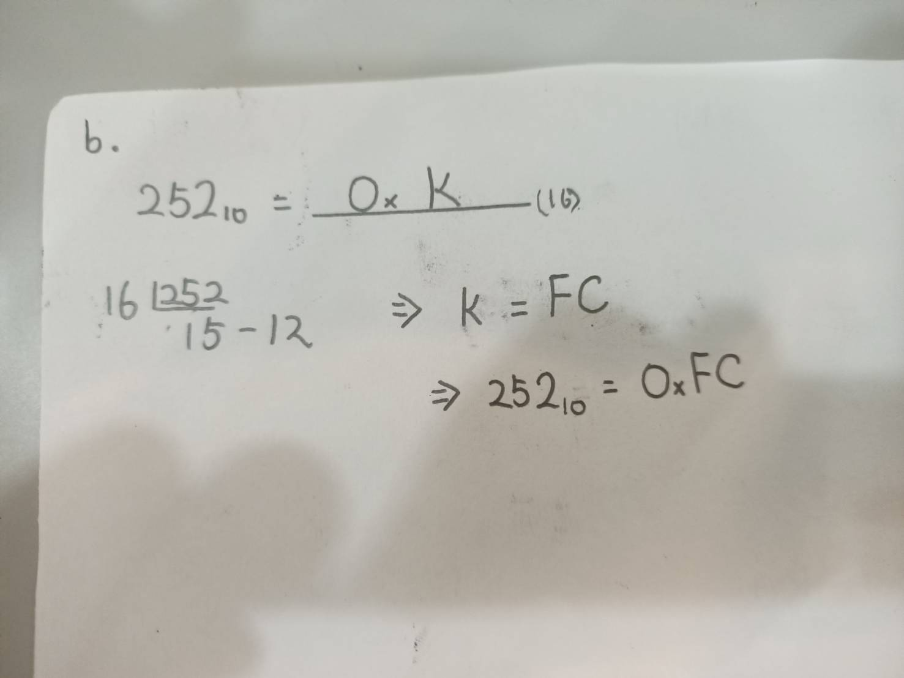
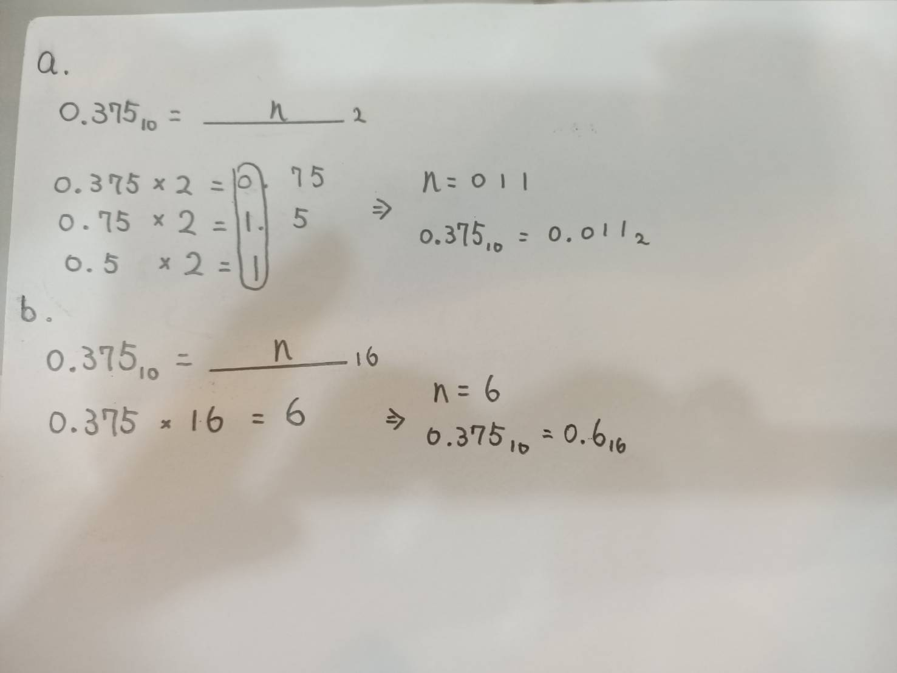
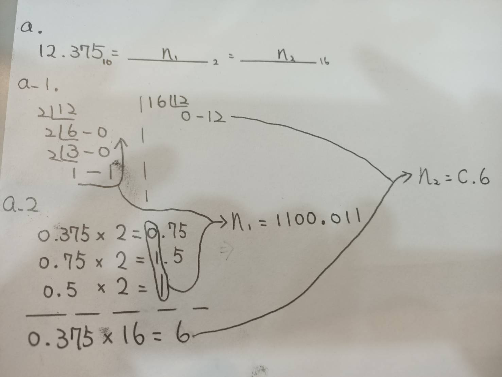

要談進制轉換前,先了解何謂進制?逢基底(10,2,16...)進位, 以10進制來說,21 = 2*101 + 1*100,說得更清楚的說10進制就是1,2,3,4,5,6,7,8,9,10,11,12,... 而在電腦科學裡以2進制與16進制為主
2進制
何謂2進制?就是逢2進位,只有1與0,且每個數字都是一個位元(bit),也就是說3就是10,四是11,...以此類推
舉例來說,1110(2) = 1*23+1*22+1*21+0*20 = 14(10)
由上述例子所知,我們可以用不同的進位制來表示同一個數
了解更多有關二進制
16進制
何謂16進制?就是逢16進位.比較特別的是在16進制中
A = 10 , B = 11 , C = 12 , D = 13 , E = 14 , F = 15
所以16進制就是1,2,3,4,5,6,7,8,9,A,B,C,D,E,F
舉例來說,0xF4(16) = 15*161+4*160 = 244(10)
在CS裡,我們通常用0xX來表示16進制
了解更多有關十六進制
8進制
何謂8進制?就是逢8進位.所以8進制就是1,2,3,4,5,6,7
了解更多有關八進制
至於如何將10進制的數轉為2進制或16進制或8進制?我們分三種情況
第一:只有整數
Ex.252
Solution.
這種情況,我們用除法將其轉為2進制或16進制或8進位,


第二:只有小數
Ex.0.375
Solution.
這種情況,我們用乘法將其轉為2進制或16進制或8進位,

第三:正數,小數皆有
Ex.12.375
Solution.
這種情況,我們通常將其分開處理來轉為2進制或16進制或8進位,

ps.雖然未列出8進位,但求法相同
詳細講解請看下面影片:
至於如何將非10進制的數轉為10進制?我們利用乘法將其基數乘上系數,舉一個例子:
ex.101110(2) = N(10),求N?
Solution.
N = 1*25 + 1*24+1*23 + 1*22+1*21 + 1*20 = 46
101110(2) = 46(10) , N = 46
至於如何在二、八、十六進制之中轉換?我們利用兩招方式,講解如下
Step1.8進制三個bits一組;16進制四個bits一組
Step2.不足位"補零"
詳細講解請看影片: